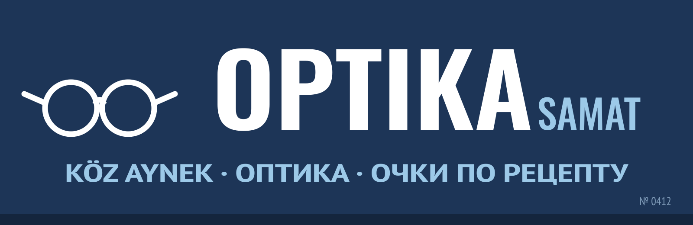

Optika · Samat ✓
Samat Optician
Оптика «Самат»
✓ Verified by Attelkom
Route in Kartalar☎ +996-39-9-7792913
About
Optician on the lane down from the citadel since 1997. Reading glasses off the rack; frames with lenses ground to your eye clinic prescription in two days. We fit glasses, we do not test eyes: bring the prescription.
Optika, 1997-jıldan beri. Közaynek eki kündö.
Prices
| Reading glasses | 25 som |
| Frames with lenses, to prescription | 180–420 som |
| Repair of frames | from 10 som |
Prices as given by the business. Updated 10.06.2025.
Reviews (2)
5.0★★★★★2 reviews
Gulmira5 reviews★★★★★
Samat aga eki kündö jasap berdi. Arzan.
Peter H.3 reviews★★★★★
Ask about the eye chart on the wall. He lettered it himself in 1997.
Reviews are shared with Kartalar · Attelkom Maps. To write a review, log in with your Attelkom personal account.